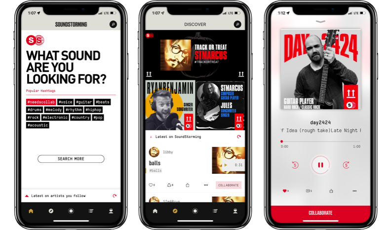

Welcome to my Portfolio Website

Hi, my name is Sasan Soroush. A self-taught iOS Developer & UI/UX Enthusiast, I started programming about six years ago & I love to learn more about what I do everyday, not just because it makes me a better developer but also because it is so much fun.
I also work on OSX, watchOS & tvOS Projects.
I am a passionate learner, It is my favorite way of having fun. In my free time, I am learning about AI, Dapps & my beloved field of making mobile games with unity.
When I'm not working I often love to play guitar, play video games and travel.
I talked a little more technical at bottom of this page.
SoundStorming
A PLATFORM FOR EXCLUSIVE ARTIST-FAN ENGAGEMENT DURING THE CREATIVE PROCESS
As an iOS Developer at SoundStorming, I led the development of the iOS app and oversaw other technical aspects such as website development and database management. Efficient time management was essential to balancing responsibilities with other commitments, and this experience helped me become a more organized and disciplined professional.
Create music together. Record and share your sounds and find musicians to help finish your track. Fast and easy way to discover ideas and make new music. Get your fans to participate in the music-making process. Download now to start your musical journey!
In this app I used firebase as a backend solution, I also used firebase as our database and user behaviour analysis ans swift 5.0 for iOS Version.
Check out the Team section at SoundStorming Website, you'll find me there.
Check it out on app store

Tipsy ™
As the lead iOS Developer for Tipsy™, a startup Shabakeh Gostaran Sabz Persia Co. was working on, I spearheaded the development of its iOS app. I led the technical side of the project and developed the app to meet the unique needs of the Tipsy™ platform.
We developed Tipsy ™ to reduce the number of heavy coins carrying every day. Tipsy ™ is a platform that handles Micro-Payments by credit cards.
Next time you can tip a waiter with tipsy, directly from your credit card. Street sellers, musicians, performers, and anyone can use Tipsy as a new income channel and let their audience to pay with credit cards.
In this app I used crisp to provide live support, Fabric Crashlytics to analyze our user's behaviour and our app bugs, PayCardsRecognizer to scan credit cards, Google & Facebook & Apple Sign In, etc.
Check it out on app store

RK Services
As the lead iOS Developer at RayanehKomak, one of the brands under the umbrella of Shabakeh Gostaran Sabz Persia Co., I was responsible for developing the RK Services app. This internal iOS application was specifically designed for use by the staff at RayanehKomak, allowing employees to view available services and select the ones they are able to perform. Its purpose was to streamline internal processes and enhance productivity within the company.
It also has an internal messaging system so users can send messages to each other.
UI/UX Designed by me.

Rahyab
I developed an iOS mobile app for a startup operating in the IoT field, allowing users to control their cars using their smartphones. With this app, users have the ability to remotely access and manage various features of their vehicles directly from their mobile devices.
You can control almost everything in you for example you can turn off and lock down your car if a thief tries to steal your car, you can even listen to your car’s cabin voices if you want to or so many more cool stuff.

Passion Projects 👨🏻💻 ☕️ ✨
iMoozik
This is iMoozik. With this application, you can search and download any song on the internet into your iOS Device. You can also make playlists for yourself.
I made it for educational purposes only.
UI/UX Designed by me.

SMS Police
This is SMS Police. This app separates the spam SMS messages and puts it in a different folder on your iOS device's official messages app.
Apple doesn't allow developers to read or manipulate SMS Messages but with the help of "Message Filter Extension" we can create an app with some rules specified in it that can decide if a message is spam or nor.
I used machine learning in this app so the ML model will get better in deciding which message is spam.
UI/UX Designed by me.

XDatabase
In this app, I put another passion of mine into app development and that is “Magic tricks”. I made some magical code that somehow “I won’t tell ya :D” it can give you the information when you get a picture from your friend’s face.
All your friends will think that you are a special secret agent and you should never tell them how this app works.
But I know you will, LOL.
UI/UX Designed by me.

Color Wheel
I have a huge interest in making games with unity but in this project, I wanted to see if I can make a game with just pure swift.
I have some experience with spriteKit for 2d games and sceneKit for 3d games but in this game, I didn't use them and made everything with default iOS methods.
UI/UX Designed by me.

Numbomb
This is another game that I developed with pure swift and in this game, numbers will fall from the top of the screen and before they reach the keypad you should type those numbers.
Game speed will increase over time and also the numbers will get bigger.
UI/UX Designed by me.

Chooked
In this project, I just wanted to implement custom flow layout in UICollectionView & all sorts of animations.
It was inspired by the famous app named “Hooked”.
for educational purposes only.

Tech Stack & More.
As an experienced iOS developer, I have worked on numerous projects and have gained expertise in various technologies and tools. My tech stack includes the latest iOS development frameworks such as UIKit, SwiftUI, CoreData, and CoreAnimation. I have also worked with third-party libraries such as Alamofire, Snapkit, Fabric Crashlytics, Firebase, and PayCardsRecognizer to implement advanced features in my apps.
In addition, I am familiar with game development frameworks such as SpriteKit, SceneKit, and Unity(C#) and have experience in integrating social media and payment gateway SDKs like Facebook Sign in, Google Sign in, and Apple Sign in. I also have knowledge in backend development technologies like MongoDB, SQL, and Firebase to develop serverless applications.
With a passion for keeping up-to-date with the latest trends and technologies in the industry, I am always excited to learn and implement new features into my apps. I believe that my technical skills and dedication to producing high-quality work can make a significant contribution to any iOS development project.
Get In Touch
I would love to hear about your app idea.
Contact Me